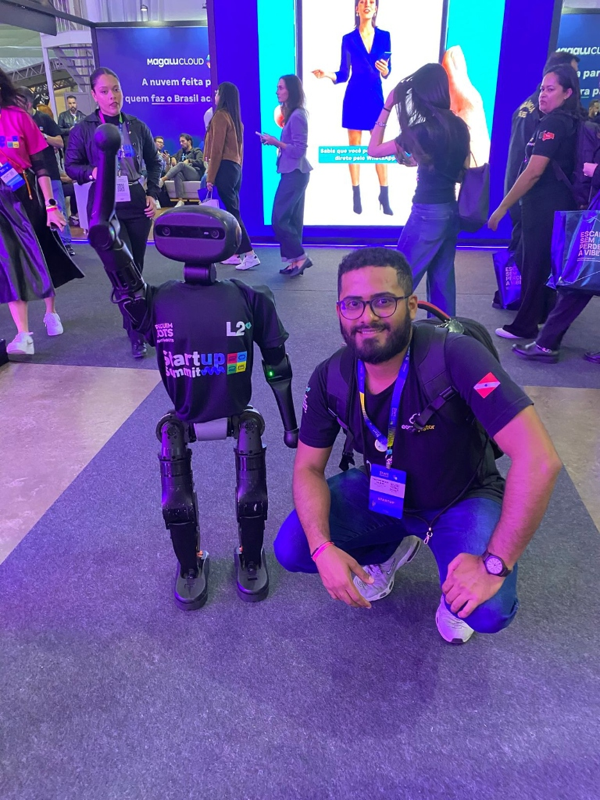

Palestra
IA com breja 2026
Além do Chat: aplicando IA para acelerar o desenvolvimento de APIs REST com Django.
Black Dog Pub · Belém, PA
THALYSON WILKER · BELÉM, PA
Sou desenvolvedor, palestrante e parte da comunidade tech da Amazônia. Aqui reúno os eventos por onde passo e o que compartilho em vídeo.
Conheça minha trajetória
01 / NA COMUNIDADE
Palestras, organização e encontros.
Conhecimento que a gente constrói junto.
Além do Chat: aplicando IA para acelerar o desenvolvimento de APIs REST com Django.
Black Dog Pub · Belém, PA
Descubra o Langflow: construindo IA de forma simples e aberta.
Faci Wyden · Belém, PA
A maior conferência de Python do Norte do Brasil.
Unama Alcino Cacela · Belém, PA
Um encontro da comunidade DevOps em Belém.
Unama Alcino Cacela · Belém, PA
Minha primeira participação na maior conferência de Python do Brasil.
Edifício Bolsa do Rio · Rio de Janeiro, RJ
02 / COMPARTILHANDO O QUE APRENDO
Um espaço para aprender e trocar ideias sobre tecnologia. Me acompanhe também por lá.
Assistir aos vídeos